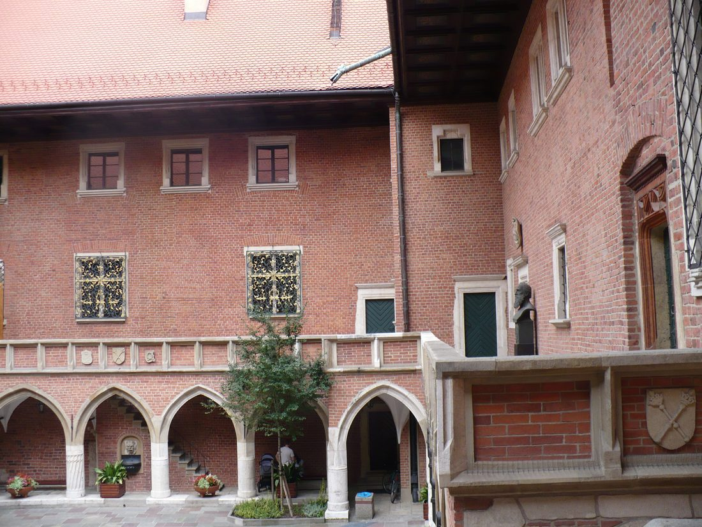
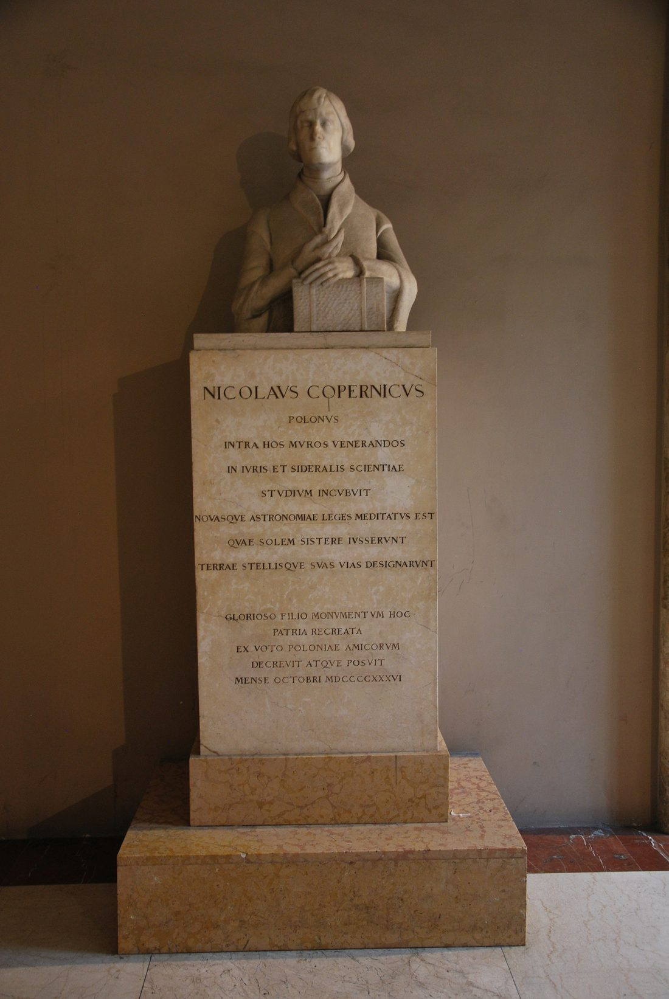
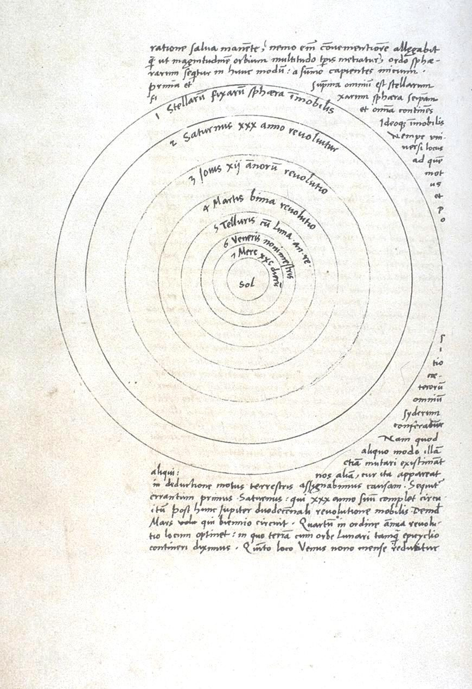
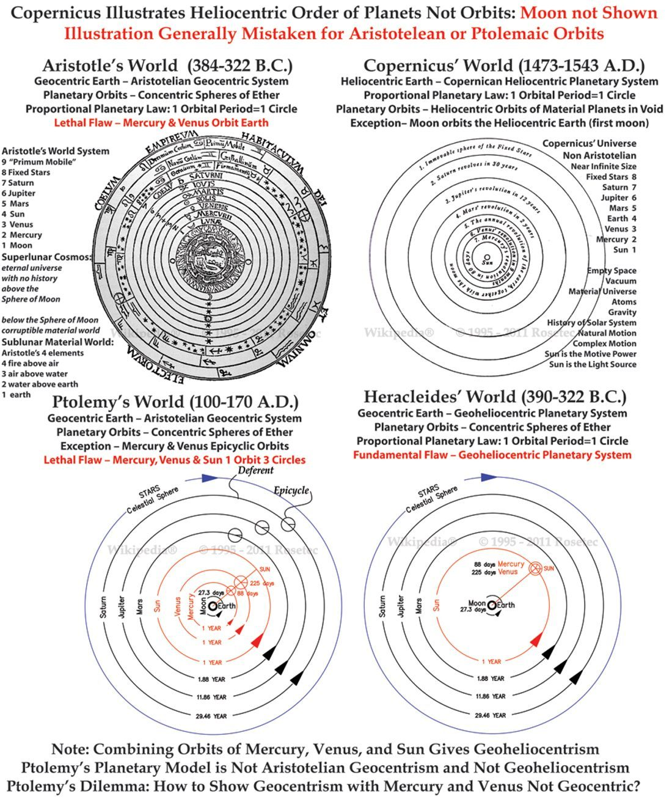
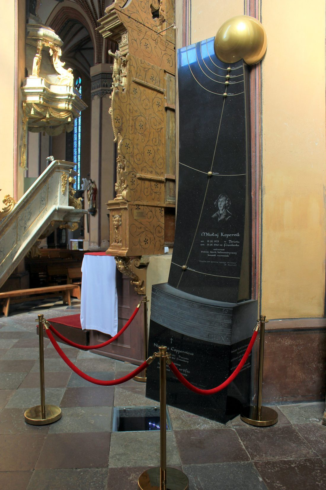

1473
生于托伦

2 月 19 日，尼古拉·哥白尼生于维斯瓦河畔的托伦。少年丧父后，由舅舅抚养，走上求学之路。
1491
克拉科夫大学

进入克拉科夫大学，研习天文学与数学，第一次系统接触星空与测算，兴趣就此点燃。
1496
留学意大利

赴意大利博洛尼亚、帕多瓦等地求学，钻研法律、医学与天文学，也读到了更完整的古希腊宇宙论。
1503
拿到学位，回乡任职

取得教会法学位后回到波兰，担任神职人员（教士），在安稳的职务之余持续观测星空。
1510
定居弗龙堡
迁居波罗的海边的弗龙堡，在塔楼里安置仪器、记录行星位置，日心说的计算在此成形。
1514
日心说初稿在友人间流传

哥白尼把日心说的初步想法写成简短手稿，只在信任的友人间流传，尚未公开挑战旧说。
1530
体系渐成

经过数十年观测与计算，完整的日心体系日渐成熟：太阳居中、地球自转并公转、行星按次序绕行。
1543
《天体运行论》出版

在友人与学生催促下，《天体运行论》终于付印。传说书送到时，哥白尼已临终，只得以目光与之告别。
1543
逝于弗龙堡

5 月 24 日，哥白尼逝世，享年 70 岁。他未能亲见自己的理论如何改变世界。
1616
被列为禁书

教会判定日心说“荒谬且与经文冲突”，《天体运行论》被列为禁书。思想的反扑，来得比预想猛烈。
1619
开普勒修正为椭圆

开普勒提出行星沿椭圆轨道运行，并给出周期—距离的定量定律，把哥白尼的草图变成精确蓝图。
1687
牛顿给出引力根基
牛顿发表万有引力与运动定律，回答了“行星凭什么绕太阳转”，日心说从此有了完整的力学根基。
1835
从禁书目录移除

《天体运行论》终于从教会禁书目录中移除。两个多世纪后，世界承认：那双“看天的眼睛”，确实换对了。